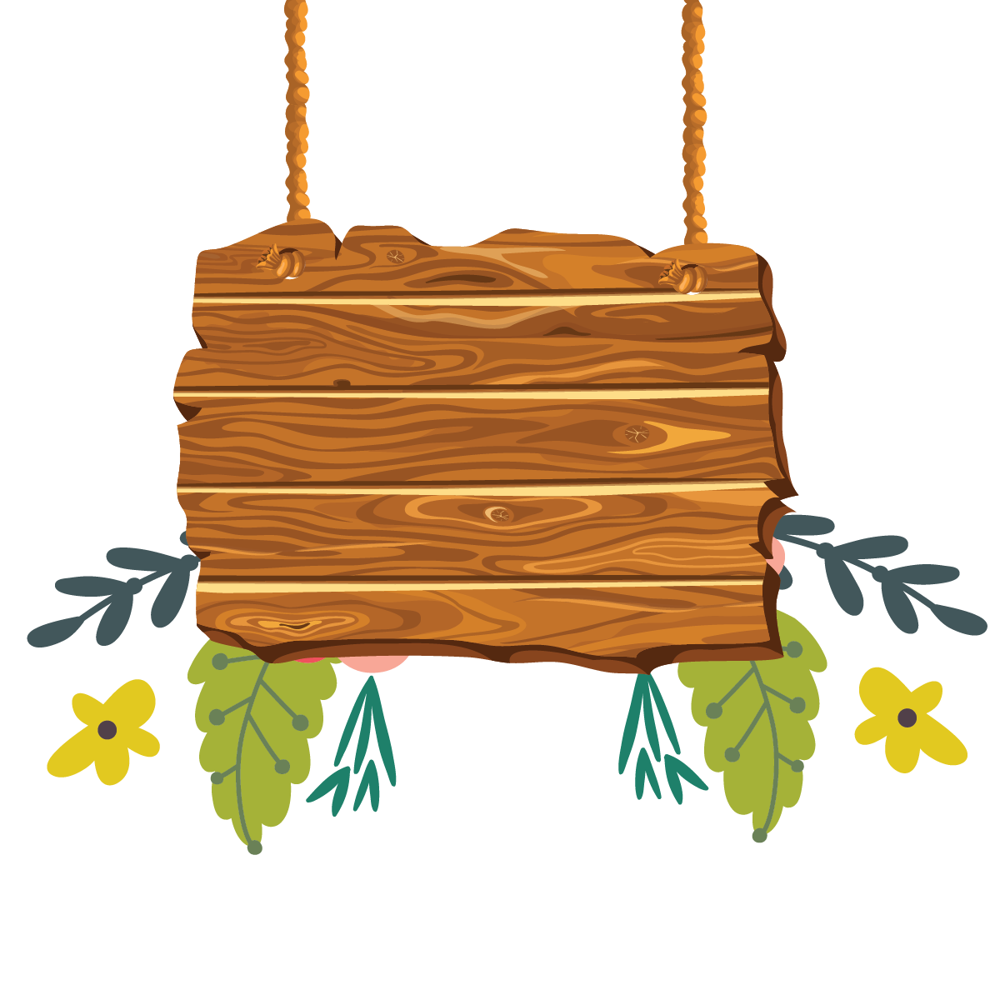

<section class="relative placa-wrapper mx-auto">
  
  <div class="absolute inset-0 flex flex-col items-center justify-center p-[5%] mt-[2%] text-center">
    <h1 class="font-decor text-[clamp(5.5rem,8vw,3rem)] leading-none neon-pink tracking-wider">
      Ivy
    </h1>
    <p class="mt-[-3%] text-[clamp(1.7rem,4.5vw,1.4rem)] font-extrabold neon-yellow tracking-wider">
      1º Anininho!
    </p>
  </div>
</section>
